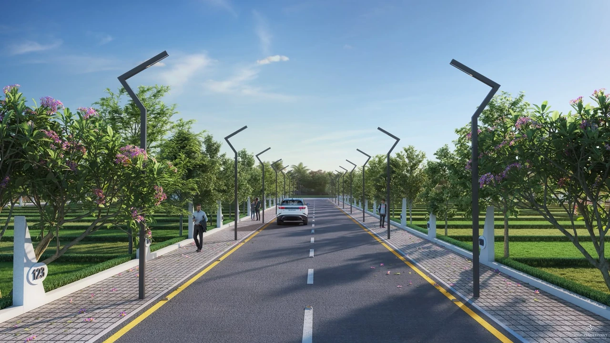

जय श्री महाकाल
Mahakal is callingyou home.
Valencia Town. Forty-eight acres of residential plots at Shahna on the Indore–Ujjain Road, forty minutes from Shri Mahakaleshwar.
- Acres
- 48
- Residential plots
- ~1,000
- Minutes to Ujjain
- 40
Artist’s impression
Some comefor a darshan.Some stay for a lifetime.
Every year, crores of devotees travel across India to Ujjain. At Valencia Town, the dawn Bhasma Aarti is a morning drive, not a once-a-year pilgrimage. For families anywhere in India, this is a rare chance to own a home where faith lives next door.
- One of the twelve Jyotirlingas of Lord Shiva.
- Bhasma Aarti at dawn, performed only here.
- Simhastha 2028, the Kumbh of Ujjain.
- 40 minutes from your doorstep to darshan.
Drive time is approximate and varies with traffic and festival crowds. Not an assurance of future value.

Between Indoreand Ujjain.
Shahna sits on the Indore–Ujjain Road. Indore’s hospitals, schools and airport on one side. Mahakal’s Ujjain on the other.
- 10minSri Aurobindo Hospital
- 25minVijay Nagar, Indore
- 25minIndore Airport
- 40minMahakaleshwar, Ujjain
Drive times are approximate and vary with traffic and route.
Artist’s impression
Forty-eight acres,planned as one.
About a thousand residential plots from 1,000–2,400 square feet, with a clubhouse, a temple, forest gardens, sports courts, children’s play areas and wide internal roads.
Indicative layout, artist’s impression
Walk the plan
01 / 08
Grand entrance
A considered arrival. Architecture and landscape introduce the world within.
Artist’s impression

Room
to breathe.
Gardens, open lawns and quieter corners woven into everyday life.
Artist’s impression

A club for
coming together.
Familiar faces, shared celebrations and neighbours who become friends.
Artist’s impression

For today, and
everything after.
Space for children to grow, families to connect and generations to belong.
Artist’s impression
A closer look.
Four views of the township as it is planned. Tap any image to see it in full.

Space to buildlife your way.
1,000–2,400square feet
Residential plots in a gated township, with a flexible payment plan. Sizes are approximate and availability changes, so ask the team for what is open today.
Artist’s impression

Come and seeValencia.
Walk the avenues. Stand on your plot. Then drive on to Ujjain for darshan. Private visits are by appointment, any day between 10 am and 7 pm.
Artist’s impression
Questions,
answered.
The essentials in brief. For anything else, the Valencia team is a phone call away.
Where is Valencia Town?
Valencia Town is at Shahna on the Indore–Ujjain Road in Madhya Pradesh, between Indore and Ujjain.
How far is it from Mahakaleshwar Temple?
About 40 minutes by road to Ujjain, home of the Mahakaleshwar Jyotirlinga. Families visiting from anywhere in India can combine a darshan with a site visit. Drive times vary with traffic, route and festival crowds.
What plot sizes are offered?
Residential plots of approximately 1,000–2,400 square feet. The sales team can confirm current sizes and availability.
What is planned within the township?
A clubhouse, temple, children’s play areas, forest-style gardens, sports courts, landscaped lawns, a senior citizens’ library, meeting and women’s activity zones, wide internal roads and gated security. Specifications and layouts are indicative and subject to change.
How well connected is it to Indore?
Sri Aurobindo Hospital is about 10 minutes away, and Vijay Nagar and Indore Airport about 25 minutes. Times vary with traffic and route.
How do I arrange a visit?
Use any “Arrange a private visit” button and leave your name and mobile number. The team will call to fix a time, and can also send the brochure, layout or price list.
Where can I check approvals and project details?
Ask the sales team for the current project documentation and applicable approvals before making a decision. The communicated project scale is approximately ₹500 crore.
More about plots on the Indore–Ujjain Road
Residential plots on the Indore–Ujjain Road
For families exploring residential plots near Indore or Ujjain, Valencia Town brings together planned community spaces and room to build a personal home. Its Shahna address on the Indore–Ujjain corridor connects the township with Sri Aurobindo Hospital, Vijay Nagar, the airport and the temple city of Ujjain.
When considering plots on the Indore–Ujjain Road, visit the location in person, review the current layout documentation and confirm available plot sizes. Our team can help you understand the planned amenities and arrange a private visit.